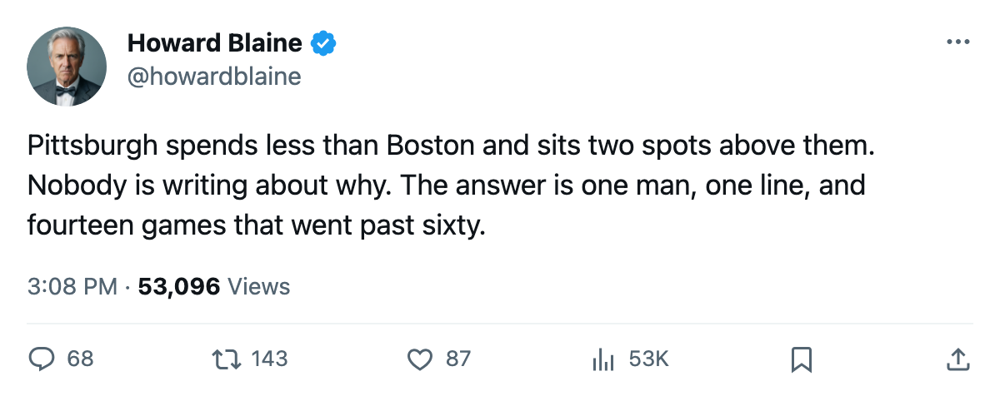
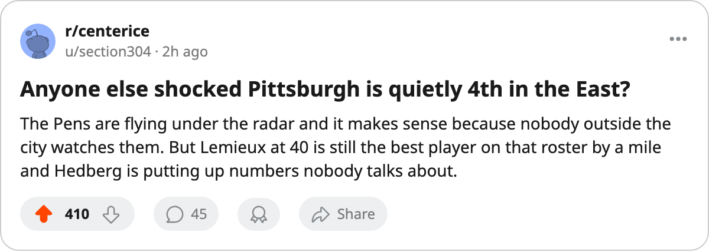

$48.92M, 8 Overtime Wins, and a 40-Year-Old at Center: Pittsburgh Has the Eastern Conference's Best Rate Per Point
The Penguins carry the fifth-cheapest roster in a 30-team league and sit 4th in the conference. A third of their games have gone to overtime, and the man driving the top line was first overall in 1984.
 Howard BlaineSenior writer, The Blaine Rankings · The Hockey Gazette
Howard BlaineSenior writer, The Blaine Rankings · The Hockey Gazette
 Pittsburgh Penguins has spent $48.92M this season, the fifth-smallest payroll in a thirty-club league, and sits fourth in the Eastern Conference with 54 points in 42 games. The cost per point is $0.91M, the best rate among every club in the conference's top eight and the second-best in the league behind
Pittsburgh Penguins has spent $48.92M this season, the fifth-smallest payroll in a thirty-club league, and sits fourth in the Eastern Conference with 54 points in 42 games. The cost per point is $0.91M, the best rate among every club in the conference's top eight and the second-best in the league behind  Nashville Predators. No club in the top four spends less. The gap between Pittsburgh and the team above it,
Nashville Predators. No club in the top four spends less. The gap between Pittsburgh and the team above it,  New Jersey Devils, is 3 points and $9.28M of payroll.
New Jersey Devils, is 3 points and $9.28M of payroll.
The desk has written this season about San Jose's $2.07M per point and Colorado's $1.30M per point and the league's inability to notice Dallas. It has not written a word about Pittsburgh, which has the cheapest roster among the East's playoff-position teams and is winning games the way no other club in its division does.
Fourteen of Pittsburgh Penguins's 42 games have gone past regulation. Eight finished as overtime wins, six as overtime losses. The club is 8-6 in extra time, adding 8 points to the standing. The OT wins reflect close games rather than late-period superiority. Pittsburgh's goal differential is 116 for, 119 against, 3 goals below zero across 42 games, and it has 54 points.
 Mario Lemieux85 is 40 years old. He was born on 1965-10-05 in Montreal, drafted first overall in 1984, and carries a $9.90M contract with 4 years remaining. He has 23 goals and 34 assists for 57 points in 42 games at 22.3 minutes a night, a pace of 111 points over 82. He sits second in the league's scoring table behind
Mario Lemieux85 is 40 years old. He was born on 1965-10-05 in Montreal, drafted first overall in 1984, and carries a $9.90M contract with 4 years remaining. He has 23 goals and 34 assists for 57 points in 42 games at 22.3 minutes a night, a pace of 111 points over 82. He sits second in the league's scoring table behind  Markus Naslund87's 61 in 41. His overall grade in the Book is 85, with a base of 92. The Bureau's Development Index has him 2 below that base. The form says the decline is real. The 57 points says the production has not followed it down yet.
Markus Naslund87's 61 in 41. His overall grade in the Book is 85, with a base of 92. The Bureau's Development Index has him 2 below that base. The form says the decline is real. The 57 points says the production has not followed it down yet.
Beside him on the scoring table sits  Martin Straka83, 33 years old, 42 games, 25 goals, 31 assists, 56 points, a 109 pace. Behind those two, Eric Meloche75 has 49 points in 42 games at 75 overall, a seventh-round pick from 1996 playing a 22.0-minute role and producing at a 96 pace. Three men have accounted for 57, 56 and 49 points, the two best positions on the roster and a depth line that should not exist on this payroll.
Martin Straka83, 33 years old, 42 games, 25 goals, 31 assists, 56 points, a 109 pace. Behind those two, Eric Meloche75 has 49 points in 42 games at 75 overall, a seventh-round pick from 1996 playing a 22.0-minute role and producing at a 96 pace. Three men have accounted for 57, 56 and 49 points, the two best positions on the roster and a depth line that should not exist on this payroll.
In goal,  Johan Hedberg86 has 24 wins in 40 starts, a 2.56 GAA and 0.874 save percentage, all at an 86 overall. He has not been on the Vezina board all season. He allows 2.83 goals a night without a single shutout, and Pittsburgh Penguins still has 9 points between it and the eighth-place club,
Johan Hedberg86 has 24 wins in 40 starts, a 2.56 GAA and 0.874 save percentage, all at an 86 overall. He has not been on the Vezina board all season. He allows 2.83 goals a night without a single shutout, and Pittsburgh Penguins still has 9 points between it and the eighth-place club,  Philadelphia Flyers.
Philadelphia Flyers.
The rate, club by club
The table below carries the Eastern Conference's top eight with payroll and cost per point. Pittsburgh's rate of $0.91M is the best in the conference. Toronto, at the top of the conference, pays $1.36M a point.
| Club | Payroll | Points | Per Point | Conference Rank |
|---|---|---|---|---|
| Pittsburgh Penguins | $48.92M | 54 | $0.91M | 4th |
 Boston Bruins Boston Bruins | $51.90M | 52 | $1.00M | 6th |
| New Jersey Devils | $58.20M | 57 | $1.02M | 3rd |
 Tampa Bay Lightning Tampa Bay Lightning | $59.79M | 53 | $1.13M | 5th |
| Philadelphia Flyers | $55.67M | 45 | $1.24M | 8th |
 New York Islanders New York Islanders | $61.02M | 49 | $1.25M | 7th |
 Toronto Maple Leafs Toronto Maple Leafs | $89.94M | 66 | $1.36M | 1st |
 New York Rangers New York Rangers | $92.95M | 60 | $1.55M | 2nd |
The overtime identity
In the Atlantic Division, Pittsburgh Penguins has played 9 games and gone 2-2 in regulation with 4 overtime wins and 1 overtime loss. The Penguins have won 6 of 9 divisional games, 4 of them in extra time. Against New York Islanders they are 1-1-0 with 2 OT wins. Against New York Rangers they are 1-0-0 with 1 OT win. Against New Jersey Devils they are 0-1-1. Against Philadelphia Flyers they are 0-0-1. The Penguins have not beaten a divisional opponent in regulation more than once this season.
What is ahead
Pittsburgh Penguins plays New York Rangers on the road on 2006-01-11, a game in which the Rangers hold a 6-game winning streak and sit 6 points above Pittsburgh in the conference table. The Penguins then host Boston Bruins on 2006-01-13, travel to  Carolina Hurricanes on 2006-01-15, and close at Tampa Bay Lightning on 2006-01-17. Four games against the second, tenth, sixth and fifth-ranked clubs in the conference. A win in any of the four tightens Pittsburgh's grip on fourth; two wins put it third.
Carolina Hurricanes on 2006-01-15, and close at Tampa Bay Lightning on 2006-01-17. Four games against the second, tenth, sixth and fifth-ranked clubs in the conference. A win in any of the four tightens Pittsburgh's grip on fourth; two wins put it third.
Lemieux's Index is 2 below his base of 92. The Book has him at 85 today. His contract runs four more years, and he is on a pace that last season produced 117 points over 73 games. The index will keep falling; whether the points follow is the question the desk should have asked earlier. At 40, with a 111 pace through 42 games and a club around him that costs less than anyone else's in the conference, Pittsburgh's efficiency starts with him.

